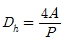
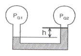
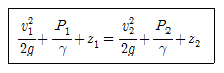
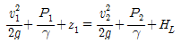
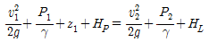
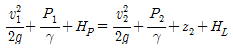
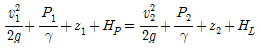
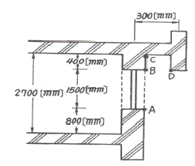
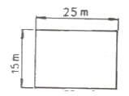

소방설비기사(기계분야) (2014-03-02 기출문제)
1과목: 소방원론
1. NH4H2PO4 를 주성분으로 한 분말소화약제는 제 몇 종 분말소화약제인가?
- 제1종
- 제2종
- 제3종
- 제4종
(정답률: 79%)

2. 다음 중 가연성 물질에 해당하는 것은?
- 질소
- 이산화탄소
- 아황산가스
- 일산화탄소
(정답률: 51%)
3. 화재하중의 단위로 옳은 것은?
- kg/m2
- ℃/m2
- kgㆍL/m3
- ℃ㆍL/m3
(정답률: 75%)
4. 일반적으로 공기 중 산소농도를 몇 vol% 이하로 감소시키면 연소상태의 중지 및 질식소화가 가능하겠는가?
- 15
- 21
- 25
- 31
(정답률: 76%)
5. 다음 중 소화약제로 사용할 수 없는 것은?
- KHCO3
- NaHCO3
- CO2
- NH3
(정답률: 79%)
6. 주된 연소의 형태가 표면연소에 해당하는 물질이 아닌 것은?
- 숯
- 나프탈렌
- 목탄
- 금속분
(정답률: 66%)
7. 위험물안전관리법령에 따른 위험물의 유별 분류가 나머지 셋과 다른 것은?
- 트리에틸알루미늄
- 황린
- 칼륨
- 벤젠
(정답률: 67%)
8. 화재시 발생하는 연소가스에 대한 설명으로 가장 옳은 것은?
- 물체가 열분해 또는 연소할 때 발생할 수 있다.
- 주로 산소를 발생한다.
- 완전연소 할 때만 발생할 수 있다.
- 대부분 유독성이 없다.
(정답률: 75%)
9. 피난계획의 일반원칙 중 fool proof 원칙에 해당하는 것은?
- 저지능인 상태에서도 쉽게 식별이 가능하도록 그림이나 색채를 이용하는 원칙
- 피난설비를 반드시 이동식으로 하는 원칙
- 한 가지 피난기구가 고장이 나도 다른 수단을 이용할 수 있도록 고려하는 원칙
- 피난설비를 첨단화된 전자식으로 하는 원칙
(정답률: 77%)
10. 다음 중 증발잠열(kJ/kg)이 가장 큰 것은?
- 질소
- 할론 1301
- 이산화탄소
- 물
(정답률: 78%)
11. 경유화재가 발생했을 때 주수소화가 오히려 위험할 수 있는 이유는?
- 경유는 물보다 비중이 가벼워 화재면의 확대 우려가 있으므로
- 경유는 물과 반응하여 유독가스를 발생하므로
- 경유의 연소열로 인하여 산소가 방출되어 연소를 돕기 때문에
- 경유가 연소할 때 수소가스를 발생하여 연소를 돕기 때문에
(정답률: 79%)
12. Halon 1301 의 분자식에 해당하는 것은?
- CCI3H
- CH3CI
- CF3Br
- C2F2Br2
(정답률: 80%)
13. "FM200"이라는 상품명을 가지며 오존파괴지수(ODP)가 0 인 할론 대체 소화약제는 어느 계열인가?
- HFC 계열
- HCFC 계열
- FC 계열
- Blend 계열
(정답률: 67%)
14. 열의 전달현상 중 복사현상과 가장 관계 깊은 것은?
- 푸리에 법칙
- 스테판-볼쯔만의 법칙
- 뉴톤의 법칙
- 옴의 법칙
(정답률: 78%)
15. 다음 중 할로겐화합물 소화약제의 가장 주된 소화효과에 해당하는 것은?
- 냉각효과
- 제거효과
- 부촉매효과
- 분해효과
(정답률: 78%)
16. 실내화재에서 화재의 최성기에 돌입하기 전에 다량의 가연성 가스가 동시에 연소되면서 급격한 온도상승을 유발하는 현상은?
- 패닉(Panic)현상
- 스택(Stack)현상
- 화이어 볼(Fire Ball)현상
- 플래쉬 오버(Flash Over)현상
(정답률: 78%)
17. 보일오버(Boil over) 현상에 대한 설명으로 옳은 것은?
- 아래층에서 발생한 화재가 위층으로 급격히 옮겨 가는 현상
- 연소유의 표면이 급격히 증발하는 현상
- 탱크 저부의 물이 급격히 증발하여 기름이 탱크 밖으로 화재를 동반하여 방출하는 현상
- 기름이 뜨거운 물 표면 아래에서 끓는 현상
(정답률: 80%)
18. 탄산가스에 대한 일반적인 설명으로 옳은 것은?
- 산소와 반응시 흡열반응을 일으킨다.
- 산소와 반응하여 불연성 물질을 발생시킨다.
- 산화하지 않으나 산소와는 반응한다.
- 산소와 반응하지 않는다.
(정답률: 56%)
19. 인화점이 낮은 것부터 높은 순서로 옳게 나열된 것은?
- 에틸알코올 < 이황화탄소 < 아세톤
- 이황화탄소 < 에틸알코올 < 아세톤
- 에틸알코올 < 아세톤 < 이황화탄소
- 이황화탄소 < 아세톤 < 에틸알코올
(정답률: 60%)
20. 점화원이 될 수 없는 것은?
- 정전기
- 기화열
- 금속성 불꽃
- 전기 스파크
(정답률: 74%)
2과목: 소방유체역학
21. 지름이 5cm인 원형 관 내에 어떤 이상기체가 흐르고 있다. 다음 중 이 기체의 흐름이 층류이면서 가장 빠른 속도는? (단, 이 기체의 절대압력은 200kPa, 온도는 27℃, 기체상수는 2080J/kgㆍK, 점성계수는 2×10-5Nㆍs/m2, 층류에서 하임계 레이놀즈 값은 2200으로 한다.)
- 0.3m/s
- 2.8m/s
- 8.3m/s
- 15.5m/s
(정답률: 50%)
22. 어떤 밀폐계가 압력 200kPa, 체적 0.1m3인 상태에서 100kPa, 0.3m3인 상태까지 가역적으로 팽창하였다. 이 과정의 P-V선도가 직선으로 표시된다면 이 과정 동안에 계가 한 일은 몇 kJ인가?
- 20
- 30
- 45
- 60
(정답률: 41%)
23. 직경이 18mm인 노즐을 사용하여 노즐 압력 147kPa로 옥내 소화전을 방수하면 방수속도는 약 몇 m/s인가?
- 10.3
- 14.7
- 16.3
- 17.1
(정답률: 45%)
24. 한 변의 길이가 L인 정사각형 단면의 수력직경(Dh)은? (단, P는 유체의 젖은 단면 둘레의 길이, A는 관의 단면적이며,

로 정의한다.)- L/4
- L/2
- L
- 2L
(정답률: 55%)
25. 그림과 같이 두 기체통에 수은 액주계(마노미터)를 연결하였을 때, 높이차(h)가 20cm이었다. 두 기체통의 압력차이는 몇 Pa인가? (단, 채워진 기체의 밀도는 수은에 비해 매우 작고, 수은의 비중량은 133kN/m3이다.)

- 26.6
- 266
- 2660
- 26600
(정답률: 48%)
26. 압축비 3인 2단 펌프의 토출압력이 2.7MPa이다. 이 펌프의 흡입압력은 몇 kPa인가?
- 90
- 150
- 300
- 900
(정답률: 43%)
27. 유체에 작용하는 힘과 운동량방정식에 관한 설명으로 옳지 않은 것은?
- 유체에 작용하는 전단응력은 체적력에 해당한다.
- 유체에 작용하는 힘에는 체적력과 표면력이 있다.
- 운동량방정식은 등속운동을 하는 관성좌표계의 경우에도 적용된다.
- 운동량방정식은 검사체적에 주어진 힘과 운동량 변화율과 의 관계를 설명한다.
(정답률: 44%)
28. 호주에서 무게가 20N 인 어떤 물체를 한국에서 재어보니 19.8N 이었다면 한국에서의 중력가속도는 약 몇 m/s2인가? (단, 호주에서의 중력가속도는 9.82m/s2이다.)
- 9.72
- 9.75
- 9.78
- 9.80
(정답률: 65%)
29. 지름이 0.3m인 구형 풍선 안에 25℃, 150kPa 상태의 이상기체가 들어있다. 풍선을 가열하여 풍선의 지름이 0.4m로 부풀었다면 이 기체의 최종 온도는 얼마인가? (단, 이 기체의 압력은 풍선의 지름에 정비례한다.)
- 94℃
- 434℃
- 669℃
- 942℃
(정답률: 36%)
30. 물 속 같은 깊이에 수평으로 잠겨있는 원형 평판의 지름과 정사각형 평판의 한변의 길이가 같을 때 두 평판의 한쪽면이 받는 정수력학적 힘의 비는?
- 1 : 1
- 1 : 1.13
- 1 : 1.27
- 1 : 1.62
(정답률: 54%)
31. 유체의 흐름에서 다음의 베르누이 방정식이 성립하기 위한 조건을 설명한 것으로 옳지 않은 것은?

- 유체는 정상유동을 한다.
- 비압축성 유체의 흐름으로 본다.
- 적용되는 임의의 두 점은 같은 유선상에 있다.
- 마찰에 의한 에너지 손실은 유체의 손실수두로 환산한다.
(정답률: 54%)
32. 물의 온도에 상응하는 증기압보다 낮은 부분이 발생하면 물은 증발되고 물 속에 있던 공기와 물이 분리되어 기포가 발생하는 펌프의 현상은?
- 피드백(feed back)
- 서징현상(surging)
- 공동현상(cavitation)
- 수격작용(water hammering)
(정답률: 67%)
33. 기업계에 나타난 압력이 740mmHg인 곳에서 어떤 용기 속의 계기압력이 600kPa이었다면 절대압력으로는 몇 kPa인가?
- 501
- 526
- 674
- 699
(정답률: 59%)
34. 펌프의 일과 손실을 고려할 때 베르누이 수정방식을 바르게 나타낸 것은? (단, HP와 HL은 펌프의 수두와 손실 수두를 나타내며, 하첨자 1, 2는 각각 펌프의 전후 위치를 나타낸다.)




(정답률: 64%)
35. 밸브가 달린 견고한 밀폐용기 안에 온도 300K, 압력 500kPa의 기체 4kg이 들어 있다. 밸브를 열어 기체 1kg을 대기로 방출한 후 밸브를 닫고 주위온도가 300K로 일정한 분위기에서 용기를 장시간 방치하였다. 내부기체의 최종압력은 약 몇 kPa인가? (단, 이 기체는 이상기체로 간주한다.)
- 300
- 375
- 400
- 499
(정답률: 47%)
36. 공기 중에서 무게가 941N 인 돌의 무게가 물 속에서 500N 이면 이 돌의 체적은 몇 m3인가? (단, 공기의 부력은 무시한다.)
- 0.012
- 0.028
- 0.034
- 0.045
(정답률: 53%)
37. 점성계수가 0.08kg/mㆍs이고 밀도가 800kg/m3인 유체의 동점성계수는 몇 cm2/s 인가?
- 0.0001
- 0.08
- 1.0
- 8.0
(정답률: 43%)
38. 지름이 일정한 관내의 점성 유동장에 관한 일반적인 설명으로 옳은 것은?
- 층류 유동시 속도분차는 2차 함수이다.
- 벽면에서 난류의 속도기울기는 0이다.
- 층류인 경우 전단응력은 밀도의 함수이다.
- 층류인 경우 중앙에서 전단응력이 가장 크다.
(정답률: 34%)
39. 지름 5cm인 구가 대류에 의해 열을 외부공기로 방출한다. 이 구는 50W의 전기히터에 의해 내부에서 가열되고 있고 구 표면과 공기 사이의 온도차가 30℃라면 공기와 구 사이의 대류 열전달계수는 약 몇 W/(m2ㆍ℃)인가?
- 111
- 212
- 313
- 414
(정답률: 44%)
40. 굴뚝에서 나온 연기 형상을 촬영하였다면 이 형상은 다음 중 무엇에 가장 가까운가?
- 유선(stream line)
- 유맥선(streak line)
- 시간선(time line)
- 유적선(path line)
(정답률: 59%)
3과목: 소방관계법규
41. 소방시설업의 지위를 승계한 자는 그 지위를 승계한 날부터 30일 이내에 상속인, 영업을 양수한 자와 시설의 전부를 인수한 자의 경우에는 소방시설업 지위승계신고서에, 합병 후 존속하는 법인 또는 합병에 의하여 설립되는 법인의 경우에는 소방시설업 합병신고서에 서류를 첨부하여 시·도지사에게 제출하여야 한다. 제출서류에 포함하지 않아도 되는 것은?
- 소방시설업 등록증 및 등록수첩
- 영업소 위치, 면적 등이 기록된 등기부 등본
- 계약서 사본 등 지위승계를 증명하는 서류
- 소방기술인력 연명부 및 기술자격증·자격수첩
(정답률: 50%)
42. 공동 소방안전관리자를 선임하여야 하는 특정소방대상물의 기준으로 옳지 않은 것은?
- 소매시장
- 도매시장
- 3층 이상인 학원
- 연면적이 5000m2이상인 복합건축물
(정답률: 65%)
43. 위험물운송자 자격을 취득하지 아니한 자가 위험물 이동 탱크저장소 운전 시의 벌칙으로 옳은 것은?(관련 규정 개정전 문제로 여기서는 기존 정답인 4번을 누르면 정답 처리됩니다. 자세한 내용은 해설을 참고하세요.)
- 50만원 이하의 벌금
- 100만원 이하의 벌금
- 200만원 이하의 벌금
- 300만원 이하의 벌금
(정답률: 61%)
44. 국가는 소방업무에 필요한 경비의 일부를 국고에서 보조한다. 국고보조 대상 소화활동장비 및 설비로서 옳지 않은 것은?
- 소방헬리콥터 및 소방정 구입
- 소방전용 통신설비 설치
- 소방관서 직원숙소 건립
- 소방자동차 구입
(정답률: 68%)
45. 소방시설공사가 설계도서나 화재안전기준에 맞지 아니 할 경우 감리업자가 가장 우선하여 조치하여야 할 사항은?
- 공사업자에게 공사의 시정 또는 보완을 요구하여야 한다.
- 공사업자의 규정위반 사실을 관계인에게 알리고 관계인으로 하여금 시정 요구토록 조치한다.
- 공사업자 규정위반 사실을 발견 즉시 소방본부장 또는 소방서장에게 보고한다.
- 공사업자의 규정위반사실을 시·도지사에게 신고한다.
(정답률: 61%)
46. 자동화재 탐지설비를 화재안전기준에 적합하게 설치한 경우에 그 설비의 유효범위 내에서 설치가 면제되는 소방시설로서 옳은 것은?
- 비상경보설비
- 누전경보기
- 비상조명등
- 무선통신 보조설비
(정답률: 64%)
47. 소방공사 감리원 배치 시, 배치일로부터 며칠 이내에 관련서류를 첨부하여 소방본부장 또는 소방서장에게 알려야 하는가?
- 3일
- 7일
- 14일
- 30일
(정답률: 45%)
48. 소방방재청장은 방염대상물품의 방염성능검사 업무를 어디에 위탁 할 수 있는가?
- 한국소방공사협회
- 한국소방안전협회
- 소방산업공제조합
- 한국소방산업기술원
(정답률: 63%)
49. 소방기본법에 규정된 화재조사에 대한 내용이다. 틀린 것은?
- 화재조사 전담부서에는 발굴용구, 기록용기기, 감식용기기, 조명기기, 그 밖의 장비를 갖추어야 한다.
- 소방방재청장은 화재조사에 관한 시험에 합격한 자에게 3년마다 전문 보수교육을 실시하여야 한다.
- 화재의 원인과 피해조사를 위하여 소방방재청, 시·도의 소방본부와 소방서에 화재조사를 전담하는 부서를 설치· 운영한다.
- 화재조사는 장비를 활용하여 소화활동과 동시에 실시되어야 한다.
(정답률: 60%)
50. 특수가연물의 저장 및 취급의 기준으로서 옳지 않은 것은?
- 특수가연물을 저장 또는 취급하는 장소에는 품명ㆍ최대 수량 및 화기취급의 금지표지를 설치하여야 한다.
- 품명별로 구분하여 쌓아야 한다.
- 석탄이나 목탄류를 쌓는 경우에는 쌓는 부분의 바닥면적 은 50m2이하가 되도록 하여야 한다.
- 쌓는 높이는 10m 이하가 되도록 하여야 한다.
(정답률: 68%)
51. 제조소 중 위험물을 취급하는 건축물은 특수한 경우를 제외하고 어떤 구조로 하여야 하는가?
- 지하층이 없는 구조이어야 한다.
- 지하층이 있는 구조이어야 한다.
- 지하층이 있는 1층 이내의 건축물이어야 한다.
- 지하층이 있는 2층 이내의 건축물이어야 한다.
(정답률: 66%)
52. 아파트로서 층수가 몇 층 이상인 것은 모든 층에 스프링클러를 설치하여야 하는가?(관련 규정 개정전 문제로 여기서는 기존 정답인 2번을 누르면 정답 처리됩니다. 자세한 내용은 해설을 참고하세요.)
- 6층
- 11층
- 15층
- 20층
(정답률: 59%)
53. 건축물 등의 신축·증축 동의요구를 소재시 관할 소방본부장 또는 소방서장에게 한 경우 소방본부장 또는 소방서장은 건축허가 등의 동의요구서류를 접수한 날부터 며칠 이내에 건축허가 등의 동의여부를 회신하여야 하는가? (단, 허가 신청한 건축물이 연면적이 20만 m2이상의 특정소방대상물인 경우이다.)
- 5일
- 7일
- 10일
- 30일
(정답률: 59%)
54. 소방시설의 하자가 발생한 경우 통보를 받은 공사업자는 며칠 이내에 이를 보수하거나 보수 일정을 기록한 하자보수 계획을 관계인에게 서면으로 알려야 하는가?
- 3일
- 7일
- 14일
- 30일
(정답률: 58%)
55. 다음 위험물 중 자기반응성 물질은 어느 것인가?
- 황린
- 염소산염류
- 알칼리토금속
- 질산에트테르류
(정답률: 55%)
56. 소방특별조사에 관한 설명이다. 틀린 것은?
- 소방특별조사 업무를 수행하는 관계 공무원 및 관계 전문가는 그 권한을 표시하는 증표를 지니고 이를 관계인에게 내보여야 한다.
- 소방특별조사 시 관계인의 업무에 지장을 주지 아니하여야 하나 조사업무를 위해 필요하다고 인정되는 경우 일정 부분 관계인의 업무를 중지시킬 수 있다.
- 조사업무를 수행하면서 취득한 자료나 알게 된 비밀을 다른 사람에게 제공 또는 누설하거나 목적 외의 용도로 사용하여서는 아니 된다.
- 소방특별조사 업무를 수행하는 관계 공무원 및 관계 전문가를 관계인의 정당한 업무를 방해하여서는 아니 된다.
(정답률: 63%)
57. 소방본부장 또는 소방서장은 함부로 버려두거나 그냥 둔 위험물 또는 물건을 옮겨 보관하는 경우 소방본부 또는 소방서 게시판에 보관한 날부터 며칠 동안 공고하여야 하는가?
- 7일 동안
- 14일 동안
- 21일 동안
- 28일 동안
(정답률: 53%)
58. 방염업을 운영하는 방염업자가 규정을 위반하여 다른 사람에게 등록증 또는 등록수첩을 빌려준 때 받게 되는 행정처분기준으로 옳은 것은?
- 1차-등록 취소
- 1차-경고(시정명령), 2차-영업정지 6개월
- 1차-영업정지 3개월, 2차-등록 취소
- 1차-경고(시정명령), 2차-등록 취소
(정답률: 57%)
59. 다음 특정소방대상물에 대한 설명으로 옳은 것은?
- 의원은 근린생활시설이다.
- 동물원 및 식물원은 동식물관련시설이다.
- 종교집회장은 면적에 상관없이 문화집회 및 운동시설이다.
- 철도시설(정비창 포함)은 항공기 및 자동차관련시설이다.
(정답률: 56%)
60. 다음 중 특수가연물에 해당되지 않는 것은?
- 800kg 이상의 종이부스러기
- 1000kg 이상의 볏짚류
- 1000kg 이상의 사류(絲類)
- 400kg 이상의 나무껍질
(정답률: 61%)
4과목: 소방기계시설의 구조 및 원리
61. 그림과 같은 소방대상물의 부분에 완강기를 설치할 경우 부착 금속구의 부착위치로서 가장 적합한 곳은 다음 중 어느 위치인가?

- A
- B
- C
- D
(정답률: 72%)
62. 지하구의 길이가 1000m인 경우, 연소방지설비의 살수구역은 최소 몇 개로 하여야 하며, 하나의 살수구역의 길이는 몇 m이상으로 해야 하는가?
- 살수구역수 : 3개, 살수구역길이 : 3m 이상
- 살수구역수 : 2개, 살수구역길이 : 30m 이상
- 살수구역수 : 3개, 살수구역길이 : 25m 이상
- 살수구역수 : 2개, 살수구역길이 : 25m 이상
(정답률: 42%)
63. 상수도소화용수설비의 설치기준 설명으로 맞지 않은 것은?
- 호칭지름 75mm이상의 수도배관에 호칭지름 100mm이상의 소화전을 접속하여야 한다.
- 소화전함은 소화전으로부터 5m 이내의 거리에 설치한다.
- 소화전은 소화자동차등의 진입이 쉬운 도로변 또는 공지에 설치한다.
- 소화전은 소방대상물의 수평투영면의 각 부분으로부터 140m이하가 되도록 설치한다.
(정답률: 59%)
64. 스프링클러 소화설비에 설치하는 스트레이너에 대한 설명이다. 옳지 않은 것은?
- 스트레이너는 펌프의 흡입측과 토출측에 설치한다.
- 스트레이너는 배관내에 여과장치의 역할을 한다.
- 흡입 배관에 사용하는 스트레이너는 보통 Y형을 사용한다.
- 헤드가 막히지 않게 이물질을 제거하기 위한 것이다.
(정답률: 70%)
65. 분말소화설비의 저장용기 내부압력이 설정압력이 될 때 주밸브를 개방하는 것은?
- 한시계전기
- 지시압력계
- 압력조정기
- 정압작동장치
(정답률: 63%)
66. 물분무 소화설비가 적용되지 않는 위험물은 어느 것인가?
- 제 5류 위험물
- 제 4류 위험물
- 제 1석유류
- 알칼리 금속과 과산화물
(정답률: 59%)
67. 평면도와 같이 반자가 있는 어느 실내에 전등이나 공조용 디퓨져 등의 시설물에 구애됨이 없이 수평거리를 2.1m로 하여 스프링클러헤드를 정방형으로 설치하고자 할 때 최소한 몇 개의 헤드를 설치하면 될 것인가? (단, 반자속에는 헤드를 설치하지 아니한느 것으로 한다.)

- 24개
- 54개
- 72개
- 96개
(정답률: 64%)
68. 포소화설비에 대한 다음 설명 중 맞는 것은?
- 포워터스프링클러헤드는 바닥면적 8m2당 1개 이상을 설치해야 한다.
- 장방형으로 포헤드를 설치하는 경우 유효반경은 2.3m로 한다.
- 주차장에 포소화전을 설치할 때 호스함은 방수구로부터 5m 이내에 설치한다.
- 고발포용 고정포방출구는 바닥면적 600m2마다 1개 이상을 설치한다.
(정답률: 58%)
69. 난방설비가 없는 교육장소(겨울 최저온도 : -15℃)에 비치하는 소화기로 적합한 것은?
- 화학포소화기
- 기계포소화기
- 산알칼리소화기
- ABC분말소화기
(정답률: 74%)
70. 예상제연구역 바닥면적 400m2미만 거실의 공기유입구와 배출구간의 직선거리로써 맞는 것은? (단, 제연경계에 의한 구획을 제외한다.)
- 2미터 이상
- 3미터 이상
- 5미터 이상
- 10미터 이상
(정답률: 46%)
71. 바닥면적이 1300m2인 판매시설에 소화기구를 설치하려 한다. 소화기구의 최소 능력 단위는? (단, 주요구조부는 내화구조이고, 벽 및 반자의 실내와 면하는 부분이 불연재료이다.)
- 7단위
- 9단위
- 10단위
- 13단위
(정답률: 44%)
72. 이산화탄소소화설비의 화재안전기준상 이산화탄소 소화설비의 배관설치 기준으로 적합하지 않은 것은?
- 이음이 없는 동 및 동합금관으로서 고압식은 16.5MPa 이상의 압력에 견딜 수 있는 것
- 배관의 호칭구경이 20mm이하인 경우에는 스케줄 20 이상인 것을 사용할 것
- 고압식의 경우 개폐밸브 또는 선택밸브의 1차측 배관 부속은 호칭압력 4.0MPa 이상의 것을 사용할 것
- 배관은 전용으로 할 것
(정답률: 57%)
73. 연결살수설비의 화재안전기준상 연결살수설비전용헤드를 사용하는 경우 하나의 배관에 부착하는 살수헤드의 개수가 3개일 때, 배관의 구경은 몇 mm 이상이어야 하는가?
- 32
- 40
- 50
- 60
(정답률: 64%)
74. 다음의 소방대상물 중 스프링클러소화설비가 적용되는 곳은?
- 제3류 금수성물품
- 제1류 알칼리금속 과산화물
- 제6류 위험물
- 제2류 철분, 금속분, 마그네슘
(정답률: 61%)
75. 이산화탄소 소화설비의 저장용기 개방밸브에 대해서 옳지 않은 것은?
- 보통기온의 변화와 진동에 안전하며 새지 않는 구조로 되어 있다.
- 전자밸브나 가스압에 의해 즉시 열릴 수 있다.
- 다른 밸브와 같이 개방 후 자동으로 닫히게 되어있다.
- 개방된 후에는 즉시 닫을 수 없다.
(정답률: 53%)
76. 옥내 소화전설비의 화재안전기준에 관한 설명 중 틀린 것은?
- 물올림탱크의 급수배관의 구경은 15mm이상으로 설치해야 한다.
- 릴리프밸브는 구경 20mm이상의 배관에 연결하여 설치한다.
- 펌프의 토출측 주배관의 구경은 유속이 5 m/s이하가 될수 있는 크기 이상으로 한다.
- 유량측정장치는 펌프 정격토출량의 175%까지 측정할 수 있는 성능으로 한다.
(정답률: 60%)
77. 전역방출방식 분말 소화설비에서 방호구역의 개구부에 자동폐쇄장치를 설치하지 아니한 경우에 개구부의 면적 1제곱미터에 대한 분말소화약제의 가산량으로 잘못 연결된 것은?
- 제1종 분말 - 4.5kg
- 제2종 분말 - 2.7kg
- 제3종 분말 - 2.5kg
- 제4종 분말 - 1.8kg
(정답률: 68%)
78. 포소화설비에서 수성막포(A.F.F.F) 소화약제를 사용할 경우 약제에 대한 설명 중 잘못된 것은?
- 불소계 계면활성포의 일종이다.
- 질식과 냉각작용에 의하여 소화하며 내열성, 내포화성이 높다.
- 단백포와 섞어서 저장할 수 있으며, 병용할 경우 그 소화력이 매우 우수하다.
- 원액이든 수용액이든 다른 포액보다 장기 보존성이 높다.
(정답률: 52%)
79. 물분무 소화설비에서 소화효과는 무엇인가?
- 냉각작용, 질식작용, 희석작용, 유화작용
- 냉각작용, 응축작용, 희석작용, 유화작용
- 냉각작용, 질식작용, 희석작용, 기름작용
- 냉각작용, 질식작용, 분말작용, 응축작용
(정답률: 72%)
80. 사강식 구조대 점검사항 중 틀린 사항은 어느 것인가?
- 유도로프의 무래주머니 모래는 새지 않는가
- 수납상자에서 용이하게 꺼낼 수 있는가
- 범포지의 봉사는 풀린 곳이 없나
- 피난기구의 위치표시 및 소화기구가 설치되어 있는가
(정답률: 63%)